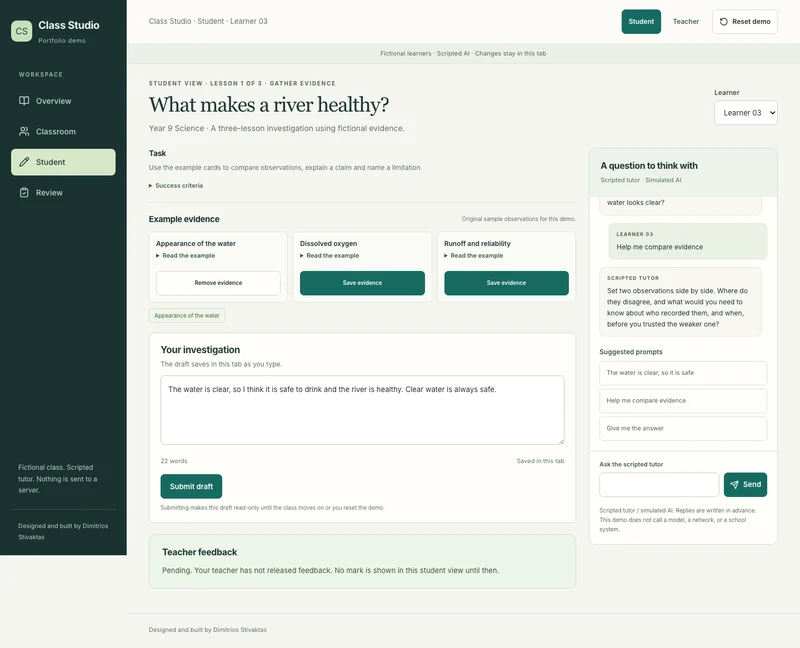

Enlarge screenshot.Source: Class Studio
Question-led tutor
A student asks for help with the river investigation and receives a prepared question about the evidence, rather than a completed explanation.
Teacher control. The teacher can inspect the learner’s draft and conversation. The scripted tutor does not verify arbitrary scientific claims.
Choose a suggested prompt and send it; consider what the question asks you to think about.